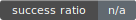
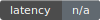
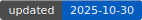

#!/usr/bin/env python3
# scripts/skywire_vital_report.py
import os, json, pathlib, datetime
import pandas as pd
import matplotlib.pyplot as plt
ROOT = pathlib.Path(__file__).resolve().parents[1]
TODAY = datetime.datetime.utcnow().strftime("%Y-%m-%d")
REPORT_DIR = ROOT / "reports" / TODAY
REPORT_DIR.mkdir(parents=True, exist_ok=True)
def load_daily_jsons():
data = []
for d in sorted((ROOT/"data").glob("20*")):
p = d / "skywire_vitals.json"
if p.exists():
j = json.loads(p.read_text(encoding="utf-8"))
vit = j.get("vitals", {})
data.append({
"date": j.get("date_utc"),
"nodes_active_est": vit.get("nodes_active_est"),
"latency_ms_avg": vit.get("latency_ms_avg"),
"uptime_ratio_avg": vit.get("uptime_ratio_avg"),
"success_ratio_avg": vit.get("success_ratio_avg"),
"proxy_activity_sum": vit.get("proxy_activity_sum"),
})
return pd.DataFrame(data)
def plot_series(df: pd.DataFrame, col: str, outname: str):
if col not in df.columns or df[col].dropna().empty:
return
plt.figure()
df.plot(x="date", y=col, legend=False)
plt.title(col)
plt.xlabel("date (UTC)")
plt.ylabel(col)
out = REPORT_DIR / outname
plt.tight_layout()
plt.savefig(out)
plt.close()
def write_badge(value: str, label: str, fname: str):
badges = REPORT_DIR / "badges"
badges.mkdir(parents=True, exist_ok=True)
svg = f''''''
(badges / fname).write_text(svg, encoding="utf-8")
def main():
df = load_daily_jsons()
if df.empty:
(REPORT_DIR/"skywire_vital_report.md").write_text("# No data yet\n", encoding="utf-8")
return 0
df = df.sort_values("date")
df.to_csv(REPORT_DIR/"skywire_vitals_timeseries.csv", index=False)
# Plots
plot_series(df, "nodes_active_est", "nodes_active_est.png")
plot_series(df, "latency_ms_avg", "latency_ms_avg.png")
plot_series(df, "uptime_ratio_avg", "uptime_ratio_avg.png")
plot_series(df, "success_ratio_avg", "success_ratio_avg.png")
# Badges (simple examples)
last = df.iloc[-1].fillna("n/a")
write_badge(f"{last.get('success_ratio_avg','n/a')}", "success ratio", "success_ratio.svg")
write_badge("n/a", "latency", "latency.svg")
write_badge(TODAY, "updated", "updated.svg")
# Report MD
md = [
f"# Skywire Vital Report — {TODAY} UTC\n",
"## Latest snapshot\n",
f"- Nodes (est.): **{last.get('nodes_active_est','n/a')}**",
f"- Success ratio avg: **{last.get('success_ratio_avg','n/a')}**",
f"- Uptime ratio avg: **{last.get('uptime_ratio_avg','n/a')}**",
f"- Latency avg (ms): **{last.get('latency_ms_avg','n/a')}**",
"",
"## Charts\n",
"",
"",
"",
"",
""
]
(REPORT_DIR/"skywire_vital_report.md").write_text("\n".join(md), encoding="utf-8")
# Latest alias
latest = ROOT / "reports" / "latest"
if latest.exists():
for p in latest.glob("*"):
if p.is_file(): p.unlink()
latest.mkdir(parents=True, exist_ok=True)
# copy files
for p in REPORT_DIR.glob("*"):
if p.is_file():
(latest/p.name).write_bytes(p.read_bytes())
# Simple HTML dashboard
html = f"""
SigmaLab — Skywire Dashboard
Skywire Dashboard — {TODAY} UTC



Charts


Open Markdown Report · Download CSV
"""
(latest/"index.html").write_text(html, encoding="utf-8")
return 0
if __name__ == "__main__":
raise SystemExit(main())